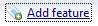
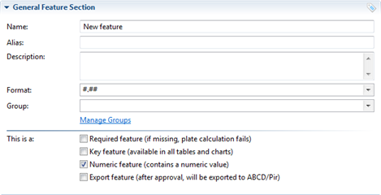
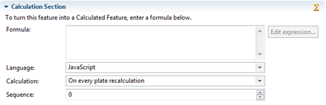
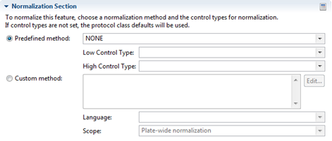
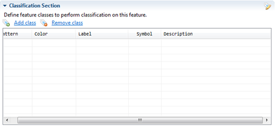
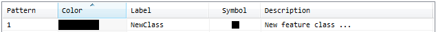
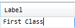
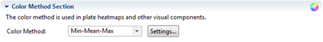
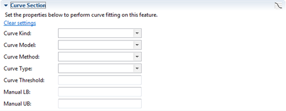

This section contains all the defined Well Features which can be used.

| Setting | Description |
| Key | Indicates if this feature is a key feature. |
| Req | Indicates if this feature is a required feature. If the feature is required, a value for this feature must be provided. |
| Calc | Indicates if this feature is a calculated feature. Calculated features use formulas to determine its value. |
| Fitted | Indicates if this feature is a fitted feature. Fitted features are features with a configured dose-response curve. |
| Feature | The name of the feature (must match the name in the imported file) |
| Alias | The alias of the feature. If an alias is provided, the alias will be used throughout Phaedra. The alias is used to shorten the feature name. |
| Group | Grouping is used to bring structure to a large number of features and make selections in dialogs easier. |
Add feature
To add a new feature, click the "Add feature" link

After clicking the "Add feature" link, a panel on the right will open allowing you to create a new feature.
General Feature Section

| Name | The name of the Feature |
| Alias | The alias of the feature. If an alias is provided, the alias will be used throughout Phaedra tables. The alias is used to shorten the feature name. |
| Description | The description of the feature (free text) |
| Format | The format determines the display of the values. You can choose a format from the list or fill in your own format type. A hashtag (#) stands for optional zero's and a zero (0) stands for required zero's. E.g. the value 14.5 will be formated to 14.5 with the mask 0.### or will be formated to 14.500 with the mask 0.000 |
| Group | Determines to which group this feature belongs. The default value is empty. To add a group click the "Manage Groups" link. |
| This is a |
|
Calculation Section

| Formula | To turn a feature into a Calculated Feature, you can enter your formula here. Note that your formula must be in the same language as specified in the Language setting below. (If the language is JEP, you can construct a formula with the "Edit expression..." function) |
| Language | The language in which the formula is written |
| Calculation | Determines when and how recalculation is done. |
| Sequence | If some calculated features depend on other calculated features, the order of calculation is important, and must be specified. Features are calculated from low to high sequence. Sequence 0 means it will be calculated before all other features. |

To normalize this feature, choose a normalization method and the control types for normalization. If control types are not set, the protocol class defaults will be used.
Predefined Method
- Choose a Normalization Type
- Choose a Low Control Type
- Choose a High Control Type
Custom Method
- Type your normalization formula based on the language selected in the Language section. (If the language is JEP, you can construct a formula with the "Edit..." function)
- Select a scope for the normalization
Classification Section

Define all the different types you will use in this classification feature. You can add a feature class by clicking on the "Add Class" link.
A new class will be added.

To edit the class, simply click on the field you would like to edit.

Color Method Section

The color method is used in plate heatmaps and other visual components. Simply choose a Color Method from the list and define it's settings by clicking on the "Settings..." button
| Classification lookup | Uses the colors exactly as defined in the Classification section of this feature. |
| Min-Max | Distributes the colors evenly between the minimum and the maximum value of this feature. You can define the Colors given to min and max. All values in between will be a varying mix of the two colors. |
| Manual Min - Max | Distributes the colors evenly between the manually defined minimum and maximum value of this feature. You can define the Colors given to min and max. All values in between will be a varying mix of the two colors. |
| Min - Mean - Max | Similar to min-max but uses a 3 color scheme; the color of the mean can also be specified. All values in between will be a varying mix of the 3 colors. |
| LC-HC | Similar to min-mean max, but adds 2 extra colors for the mean Low and High control values. Distributes the colors evenly between the minimum and the maximum value of this feature. all values in between will be a varying mix of the 5 colors. |
| LC | Same as LC-HC, but without HC color. All values in between will be a varying mix of 4 colors. |
| HC | Same as LC-HC, but without LC color. All values in between will be a varying mix of 4 colors. |
| Lookup | An arbitrary number of distinct colors can be added. |
Curve Section

Set the properties below to perform curve fitting on this feature.
| Curve Kind | Determines the kind of curve will be displayed |
| Curve Model | Determines which model will be used for the curves |
| Curve Method | Determines which method will be used for the curves |
| Curve Type | Determines which type will be used for the curves |
| Curve Threshold | |
| Manual LB | Specify this when using PL3L |
| Manual UB | Specify this when you use PL3U |
Edit Feature
Editing Features use the same principles as the "Add Feature" functionality
Delete Feature
You can delete a feature by selecting it in the list followed by clicking the "Delete feature(s)" link. All the values within the feature will also be deleted.